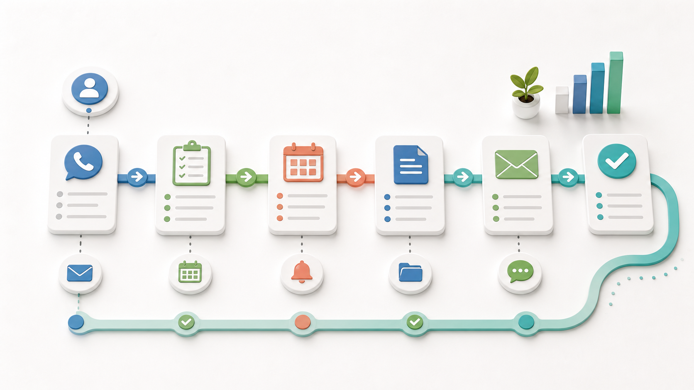

他社の改善事例 / BtoB営業・不動産・士業
営業が本当にやるべき仕事以外を、AIが前後で進めておく
顧客調査、商談メモ、提案論点、フォローメールをAIが整え、営業担当が会話と関係づくりへ集中するケースです。
先に結論
営業が顧客と向き合う前後の仕事を、AIが先に整えておきます。
営業が疲れるのは、商談だけではありません。訪問前の調査、提案資料の下準備、商談後のメモ整理、フォローメールが、次の商談の前に積み上がります。
改善後は、AIが会社情報、過去接点、商談メモを読み、論点と次アクションを整理します。担当者は人間関係や提案の勘所に集中できます。
読みどころ
どこで詰まり、何を変え、何が楽になるのか。
現場で起きていたこと
顧客情報、過去接点、業界ニュースを担当者が毎回手で集めていました。この小さな探し物が積み重なると、担当者は本来見たい判断に入る前に疲れてしまいます。
変えたこと
AIには完成判断ではなく、顧客調査の要約、商談メモの構造化、提案論点と宿題の整理を任せます。人が見るべき例外や確認点を先に出し、作業をゼロから作る状態から確認できる状態へ寄せます。
改善後に残るもの
翌日ではなく当日中に自然なフォローを返しやすくなります。戻った時間は、顧客対応、スタッフ教育、品質確認、次の営業活動など、人が直接価値を出す仕事へ戻せます。
改善後の実感
商談前後のフォローを、作る時間から確認する時間へ寄せていきます。
準備が夜に残る
顧客調査やフォロー文が後回しになり、商談後の熱が薄れていました。
下書きが当日中
AIが論点、宿題、メール案をまとめ、人が確認して送れます。
接点が早い
翌日ではなく当日中に自然なフォローを返しやすくなります。
ある日のナラティブ
商談後の18時04分、営業担当はまだメールを書けていませんでした。
午後の商談では、顧客が予算の不安と社内説得の難しさを話していました。担当者は手帳に走り書きしましたが、次の移動と電話で、整理する時間を失います。
以前は、夜に記憶を頼りにメールを書き、細かい言葉を忘れていました。提案の論点も、資料を開くころにはぼやけています。
改善後は、商談メモをAIへ渡します。AIは顧客課題、約束した宿題、次回確認事項、フォローメール案をまとめます。
担当者は温度感と表現を直し、当日中にメールを送ります。早い返信は、営業の熱心さではなく、相手の不安を覚えていることとして伝わります。
画像で見る改善ポイント
この仕事は、画面の中だけでなく現場の動き方が変わります。
次アクションを見える化
次アクションを見える化場面があると、改善後の働き方を読者が具体的に想像できます。

商談後すぐ動ける
商談後すぐ動ける場面があると、改善後の働き方を読者が具体的に想像できます。

顧客の不安を残さない
顧客の不安を残さない場面があると、改善後の働き方を読者が具体的に想像できます。
導入前
導入前は、商談前後のフォローの材料があちこちに散らばっていました。
顧客情報、過去接点、業界ニュースを担当者が毎回手で集めていました。
手帳、CRM、メールに分かれ、次アクションが曖昧になっていました。
提案書作成に追われ、商談後の温度が残っているうちに連絡できませんでした。
仕事の流れ
AIに任せるのは、商談前後のフォローの下準備までです。
AIが過去接点、業界、先方課題を短くまとめます。
発言、宿題、懸念、次回約束を整理します。
相手の言葉を踏まえた文面を下書きします。
関係性、約束、価格、言い回しは営業担当が見ます。
人とAIの分担
任せる仕事と、任せてはいけない判断を分けます。
AIに渡しやすい作業
- 顧客調査の要約
- 商談メモの構造化
- 提案論点と宿題の整理
- フォローメール下書き
人が見るべき判断
- 商談での聞き取りと関係づくり
- 提案方針と価格判断
- 相手の温度感に合う表現
- 送信と次回約束の判断